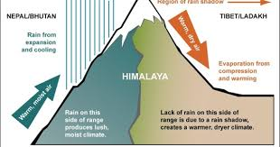

Once the monsoons subside, average temperatures gradually fall across India. As the Sun's vertical rays move south of the equator, most of the country experiences moderately cool weather. December and January are the coldest months, with the lowest temperatures occurring in the Indian Himalayas. Temperatures are higher in the east and south.
In northwestern India region, virtually cloudless conditions prevail in October and November, resulting in wide diurnal temperature swings; as in much of the Deccan Plateau, they register at 16–20 °C (61–68 °F). However, from January to February, "western disturbances" bring heavy bursts of rain and snow. These extra-tropical low-pressure systems originate in the eastern Mediterranean Sea.[27] They are carried towards India by the subtropical westerlies, which are the prevailing winds blowing at North India's range of latitude.[22] Once their passage is hindered by the Himalayas, they are unable to proceed further, and they release significant precipitation over the southern Himalayas.
 There is a huge variation in the climatic conditions of Himachal Pradesh due to variation in altitude (450–6500 metres). The climate varies from hot and subtropical humid (450–900 meters) in the southern low tracts, warm and temperate (900–1800 metres), cool and temperate (1900–2400 metres) and cold glacial and alpine (2400–4800 meters) in the northern and eastern elevated mountain ranges. By October, nights and mornings are very cold. Snowfall at elevations of nearly 3000 m is about 3 m and lasts from December start to March end. Elevations above 4500 m support perpetual snow. The spring season starts from mid February to mid April. The weather is pleasant and comfortable in the season. The rainy season starts at the end of the month of June. The landscape lushes green and fresh. During the season streams and natural springs are replenished. The heavy rains in July and August cause a lot of damage resulting in erosion, floods and landslides. Out of all the state districts, Dharamshala receives the highest rainfall, nearly about 3,400 mm (134 in). Spiti is the driest area of the state, where annual rainfall is below 50 mm.[28] The five Himalayan states (Jammu and Kashmir in the extreme north, Himachal Pradesh, Uttarakhand, Sikkim and Arunachal Pradesh) and Northern West Bengal experience heavy snowfall, Manipur and Nagaland are not located in the Himalayas but experience occasional snowfall; in Jammu and Kashmir, blizzards occur regularly, disrupting travel and other activities.In South India, particularly the hinterlands of Maharashtra, parts of Karnataka, and Andhra Pradesh, somewhat cooler weather prevails. Minimum temperatures in western Maharashtra and Chhattisgarh hover around 10 °C (50 °F); in the southern Deccan Plateau, they reach 16 °C (61 °F). Coastal areas—especially those near the Coromandel Coast and adjacent low-elevation interior tracts—are warm, with daily high temperatures of 30 °C (86 °F) and lows of around 21 °C (70 °F). The Western Ghats, including the Nilgiri Range, are exceptional; lows there can fall below freezing.[33] This compares with a range of 12–14 °C (54–57 °F) on the Malabar Coast; there, as is the case for other coastal areas, the Indian Ocean exerts a strong moderating influence on weather.[12] The region averages 800 millimetres (31 in).